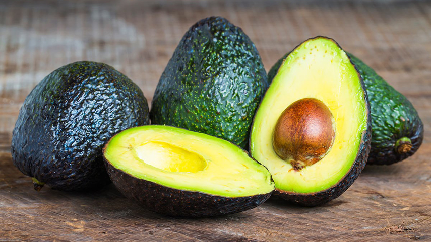

Las grasas está presentes en muchos de los alimentos que consumimos a diario, algunas de ellas aportan grandes beneficios para la salud, mientras que otras deben consumirse con moderación.A continuació, algunos ejemplos:
- Aceites vegetales: como el de oliva, girasol, maíz o canola. Se utilizan para cocinar, freír y aderezar ensaladas. Son fuente importante de ácidos grasos insaturados que ayudan a proteger el corazón.

Aguacate: muy versátil en la cocina, ya sea en ensaladas, salsas o simplemente como acompañamiento. Es rico en grasas saludables, principalmente ácido oleico, que ayuda a regular el colesterol.